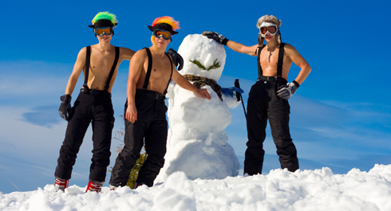
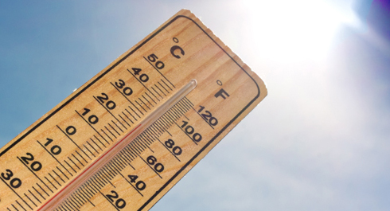
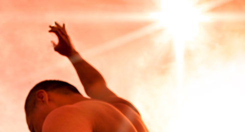
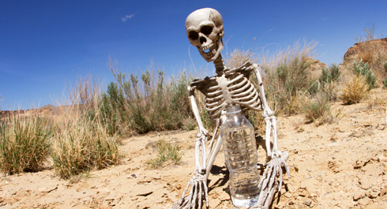
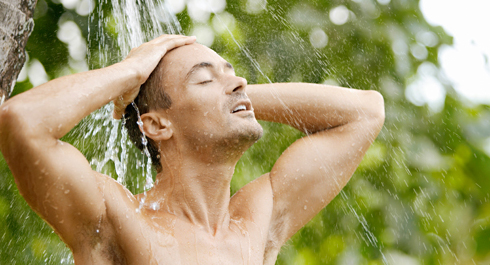
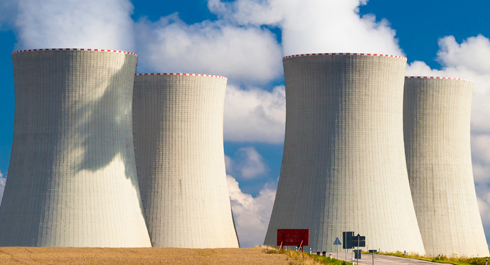

Стрит Воркаут – это уличная субкультура, а значит, погодные условия оказывают свое влияние на тренировки. На улице может быть холодно или жарко, но это вовсе не значит, что нужно отменять занятие. Это только значит, что нужно включить голову и внести соответствующие корректировки. В сегодняшнем инфопосте мы рассмотрим несколько простых рекомендаций, которые позволят комфортно тренироваться на улице круглый год!
Тренировки в ХОЛОД
Даже когда температура за окном опускается ниже минус 15-20 градусов, все равно можно продолжить тренироваться на улице. Ты удивишься, но занятия в мороз порой проходят гораздо приятнее, чем в летний зной. Ведь натянуть на себя еще один слой одежды и согреться гораздо легче, чем охладиться под палящим солнцем.Польза зимних тренировок
1. Закалка организма. Зимние тренировки на открытом воздухе помогут закалить организм и избежать надоедливых простудных заболеваний.2. Непрерывность тренировочного процесса. Не делая вынужденной паузы в тренировках зимой, ты продолжаешь прогрессировать и весной не сталкиваешься с необходимостью начинать все с начала. Другими словами, ты готовишься к новому пляжному сезону еще с осени, а не как все – за месяц.
3. Незабываемые впечатления. Представьте, солнце только встает из-за крыш домов, изо рта идет пар, под ногами поскрипывает только что выпавший снежок, а вы, вместо того чтобы нежиться в теплой постели, уже на площадке, покоряете новые вершины.
4. Тренировка силы воли, стойкости и целеустремленности. Комментарии излишни.
5. Свежий морозный воздух. Бодрит и повышает настроение.
Логично, что основная проблема тренировок в холодное время года – температурный режим. Причем он несет в себе сразу несколько опасностей, на которые стоит обратить внимание. И практически все они в той или иной степени устраняются вашей формой одежды.
Правила ЗИМНИХ тренировок
№1. Не перегревайся! Частая ошибка начинающих зимних спортсменов — страх мороза и слишком большое количество одежды. В результате человек начинает обильно потеть и испытывать дискомфорт. На зимнюю тренировку одевайся так, чтобы было слегка холодно, если ты стоишь и ничего не делаешь. Но волноваться не стоит, потому что, выполняя упражнения, ты быстро согреешься!
№2. Многослойность одежды Зимой стоит надевать несколько слоев одежды, каждый из которых будет выполнять определённую функцию. Первый (нижний) слой – термобелье, отводящее влагу от тела. Лучше всего полный комбинезон (а не кофта и штаны отдельно), потому что во время занятия мы совершаем много движений, и кофта может задраться, оголив поясницу. Второй слой – одежда из флиса, удерживающая тепло. Третий (внешний) слой защищает от ветра, дождя или снега. Он выбирается по текущей погоде.
№3. Полная защита Отдельное внимание стоит уделить открытым частям тела: руки, уши, нос. Если на улице уже минус, особенно с сильным ветром, то нужно обязательно позаботиться о голове и конечностях. Даже во время самых интенсивных тренировок уши и нос все равно подвергаются опасности обморожения, поэтому нельзя забывать о шапке, а в сильные морозы о специальной маске, балаклаве или баффе, или теплом шарфе. Ну и, естественно, пальцы. Им и так по роду деятельности довольно сильно достается во время тренировок, а уж держаться за металлическую перекладину при морозе -20 градусов – не самая приятная вещь на свете, поэтому стоит озаботиться приобретением специальных перчаток для тренировок зимой.
№4. Тепло - не значит дорого! Интернет пестрит сайтами, рекламирующими специальную фирменную одежду для тренировок в холодное время года. Как правило, стоит она немалых денег и сопровождается просто фантастическими описаниями своей эффективности. Приобретение такой высокотехнологичной экипировки является полезным, но отнюдь не критичным условием для успешных зимних тренировок. Главное помни, что стоит отдавать предпочтение синтетическим тканям, которые не впитывают влагу и быстро сохнут.
№5. Прогревай "движок"! Зимой значение разминки многократно возрастает, потому что организму предстоит трудиться на холоде! Всем автомобилистам предлагаю провести следующую аналогию. Завести двигатель машины при –30 и +30 – это, как говорят в Одессе, две большие разницы. В холода после запуска двигателя движение начинают плавно, прогревая все узлы и механизмы. Для человеческого тела в условиях зимних тренировок это не менее актуально. Разминку лучше сделать еще дома, чтобы, выйдя на холод, ты сразу начал тренироваться. Если площадка с турниками находится далеко от дома, можно начать занятие с легкой пробежки.
№6. Зима на улице Когда ты тренируешься на холоде, организм тратит много энергии на поддержание рабочей температуры. Во время отдыха между кругами ни в коем случае не стой без движения, чтобы не замерзнуть. Ходьба и махи руками не дадут телу остыть. Отдельное внимание мы хотим обратить на проблему гололеда. Это действительно серьезная опасность, которая может подстерегать зимой под свежим снежком. Поэтому аккуратно спрыгивай с турника или брусьев, следи куда ступаешь во время выпадов, а также во время разминочной пробежки. Вдыхать морозный воздух можно исключительно через нос – это поможет избежать простудных и инфекционных заболеваний, связанных с длительным вдыханием холодного воздуха.
№7. Окончание тренировки После занятия не оставайся на улице в разгоряченном состоянии без физической активности. Заканчивая тренировку, старайся сразу же попасть в теплое помещение. Если до дома далеко, то пробежка станет прекрасной заминкой, а по возвращении в жилище можно принять теплый душ и выпить горячего чая. Это станет отличным завершением тренировки.
Заключение
Зимние тренировки хоть и не являются предельно экстремальным занятием, все же имеют свои отличия от обычных. Прислушивайся к своим ощущениям, не ставь себе заоблачных задач, не стесняйся отменить тренировки в сильную непогоду или при плохом самочувствии. Проявляй благоразумность. Иногда лучше провести легкую тренировку дома или вообще пропустить занятие, чем слечь с воспалением легких на целый месяц.P.S. Ну и пара советов напоследок. Во-первых, если за пару минут до выхода на тренировку бросить форму на батарею, то выходить на улицу потом будет намного приятней. Во-вторых, если бегать зимой, то завершать бег стоит по направлению ветра, чтобы не задыхаться от холодного потока.
Тренировки в ЖАРУ
Особенности и условия летних тренировок
Весна и лето – самое активное и во всех смыслах жаркое время в воркауте. В то время как во многих видах спорта наступает межсезонное затишье, на уличных площадках начинается настоящий бум: подтягиваются перезимовавшие воркаутеры, случайные "подснежники", которые решили построить "тело для пляжа" за месяц, а также представители зимних видов спорта, которым летом можно тренировать только ОФП. Тренироваться летом легко, весело и приятно, однако существуют определенные моменты, на которые мы постараемся обратить твое внимание сегодня.Сразу определимся, чего стоит бояться во время тренировок летом, а именно: высокая температура и влажность воздуха, прямые лучи солнца, обезвоживание, переохлаждение, условно ядовитые испарения. А теперь обо всем по порядку.
Высокая температура и влажность воздуха
Наш организм является саморегулирующейся системой, поддерживающей постоянство внутренней среды (гомеостаз), одним из важнейших показателей которого является температура тела, влияющая на прохождение абсолютно всех химических реакций в организме. Поэтому продолжительное отклонение (до 24 часов) температуры тела от нормы всего на 4-5 градусов ведет к летальному исходу.
Для обеспечения постоянства температуры тела наш организм имеет ряд механизмов: тонус сосудов для перераспределения крови между холодными и теплыми участками, потоотделение, холодовая дрожь и т.д. Помни, что температура тела зависит от двух происходящих параллельно процессов: выработки тепла и передачи его во внешнюю среду. В покое 2/3 тепла человеческого тела образуется внутренними органами, 1/3 – мышцами. Во время тренировки ситуация кардинально меняется, и уже мышцы образуют львиную долю тепла, т.е. теплообразование всего организма увеличивается в 2-3 раза. Отдача тепла идет 3 путями: теплопроводность, конвекция и излучение. Не вдаваясь в школьный курс физики, отметим, что критическая температура воздуха – 28-32 градусов. При достижении этой отметки, а тем более превышении ее, тело резко теряет способность отдавать тепло. Фактически, при температуре воздуха выше температуры кожи, у нас работает только один механизм теплоотдачи – теплопроводность (с помощью потоотделения и вентиляции легких). А эффективность этого механизма очень сильно зависит от влажности воздуха, например при 100% влажности воздуха испарение пота вообще не будет происходить, то есть опасность перегрева и получения теплового удара резко возрастает при достижении температуры воздуха температурой кожных покровов и/или влажности воздуха 80-100%.
Прямые солнечные лучи
Прямые солнечные лучи способны нагревать предметы практически безгранично. Тренируйся утром или вечером, когда солнце еще только восходит или уже начинает заходить. Так ты снизишь риск теплового и солнечного удара. Их симптомы: возникновение головной боли, головокружение, вялость, чувство усталости или тревожного возбуждения, дезориентация и спутанность сознания. В тяжелых случаях – судороги, потеря сознания, галлюцинации. Возможен учащенный пульс, высокая температура тела, кожа становится сухой и горячей. Если кто-то из окружающих получил тепловой или солнечный удар, немедленно вызывай скорую. До прибытия врачей перенеси пострадавшего человека в прохладное помещение или тень, напои его водой и наложи ему на голову холодный компресс.
Обезвоживание
Летом организм усиливает потоотделение, чтобы удержать температуру тела на нормальном уровне. Соответственно если эту жидкость своевременно не компенсировать, то повышается риск обезвоживания организма. Даже легкая дегидратация повышает износ суставов и возможность получить травмы , и снижает способность мышц к восстановлению после тренировок. В связи с озвученной выше опасностью обезвоживания рекомендации по питью будут следующими: пей воду за час до тренировок в умеренном количестве (достаточно выпить около 0,5л). Пей воду во время тренировки каждые 10-15 минут небольшими порциями. Пей минеральную воду или холодный чай после тренировки.
Переохлаждение
Летом после тренировки порой так хочется принять холодный душ или окунуться в озеро. Это не совсем очевидная, но все же часто встречающаяся опасность. Тренировки повышают температуру тела и стимулируют обмен веществ. Сердце увеличивает ритм и кровь с большой скоростью циркулирует по организму. Чтобы справиться с возросшим давлением, сосуды расширяются. Но как только тело погружается в холодную воду, сосуды начинают стремительно сужаться, а кровяное давление резко возрастает. Это большой стресс для организма – вдруг может подскочить давление, а еще можно банально простудиться, потому что в этот момент способность организма сопротивляться болезням резко снижается.
Вредные испарения
Смог, парниковые газы и другие “достижения” цивилизации давно стали верными спутниками жителей больших городов. Из-за высокой температуры и влажности летом концентрация этих веществ в воздухе многократно возрастает. Поэтому если твоя спортивная площадка летом начинает благоухать различными неприятными ароматами, то стоит подыскать себе другое место для тренировок.
Особенности тренировочных программ
Зимой в результате особенностей питания, а также меньшей подвижности происходит естественное накопление массы тела. Весной и летом наоборот, появление в рационе фруктов и овощей снижает его калорийность, а повышение двигательной активности ведет к дополнительной трате калорий. Поэтому логично в течение года заниматься естественными вещами: зимой – активно наращивать мышцы, летом – сбрасывать жир. Свои тренировочные программы стоит адаптировать под эти цели. Т.е. летом можно заниматься меньше с доп. весом, зато работать на улучшение ОФП и силовой выносливости. Никто, конечно, не запрещает все делать с точностью да наоборот, но зачем?Так как адаптировать свою программу под лето? Помни о повышенных нагрузках на сердце. Следи за своим самочувствием и пульсом. Ты можешь увеличить время отдыха между подходами, чтобы уменьшить интенсивность, или разбить привычную тренировку на 15-30-минутные отрезки, которые будешь выполнять в течение дня несколько раз. Также можно избавиться от вспомогательных упражнений, сосредоточившись на базовых многосуставных, которые будут прорабатывать максимальное количество мышечных групп за раз. Работай с такими показателями тренировочного процесса, как продолжительность и количество тренировок, количество и состав упражнений, количество повторов и подходов, время отдыха между подходами. Помни, что единственная боль, которую ты должен чувствовать, – это боль в мышцах (не суставная, не головная, не колющая, ноющая боль в сердце).
Рекомендации к тренировкам:
1. Тренировки предпочтительнее проводить в утреннее (до 10:00) или в вечернее время (после 18:00), избегая при этом необходимости заниматься под прямыми лучами солнца и выбирая площадки, где имеется хотя бы частичная тень.2. Пейте достаточно жидкости до тренировки и обязательно берите с собой воду на тренировку.
3. Головной убор и одежда должны быть светлого цвета и, желательно, из «прохладных» тканей (хлопок, лен). Не пользуйся антиперспирантами перед тренировкой, потому что они затрудняют потоотделение и увеличивают шансы получить тепловой удар.
4. Интенсивность и продолжительность тренировки стоит уменьшать, если возникает ухудшение самочувствия или снижение показателей в привычных режимах.
Главное — помнить, что мы тренируемся для того, чтобы быть здоровыми, сильными и активными, поэтому энтузиазм к тренировкам должен быть умеренным.